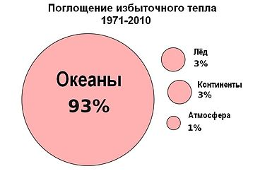
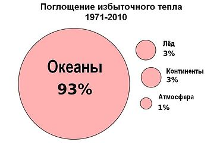

глобальное потепление
Глобальное потепление, основной причиной глобальново потепление является человеческая деятельность.
Начиная с 1850 года, в десятилетнем масштабе, температура воздуха в каждое десятилетие была выше, чем в любое предшествующее десятилетие. С 1750—1800 годов человек ответственен за повышение средней глобальной температуры на 0,8—1,2 °C.
Ввиду инерционности климатической системы, даже в случае прекращения антропогенного воздействия неизбежно потепление ещё на 0,6 °С. Вероятная величина возможного роста температуры на протяжении 21 века на основе климатических моделей составляет 0,3—1,7 °C для минимального сценария эмиссии парниковых газов, 2,6—4,8 °C для сценария максимальной эмиссии. Как указывается на сайте ООН: существуют тревожные свидетельства того, что превышение пороговых показателей, ведущее к необратимым изменениям в экосистемах и климатической системе нашей планеты, уже произошло.
 В 1988 году при участии Организации Объединённых Наций (ООН) в целях предоставления объективных научных данных была создана Межправительственная группа экспертов по изменению климата (МГЭИК), работающая под эгидой ООН. Последовавшие годы послужили достижению научного консенсуса в оценке причин глобального потепления. В предпоследнем, Четвертом оценочном докладе МГЭИК , констатировалась 90 %-ная вероятность того, что большая часть изменения температуры вызвана повышением концентрации парниковых газов вследствие человеческой деятельности. В своём последнем на настоящий момент, Пятом докладе (2014), МГЭИК заявила:
« Было установлено влияние человека на повышение температур атмосферы и океана, изменение глобального гидрологического цикла, уменьшение количества снега и льда, повышение глобального среднего уровня моря и на некоторые экстремальные климатические явления... Чрезвычайно вероятно, что влияние человека было основной причиной потепления, наблюдаемого с середины ХХ-го века.
В 2021 и 2022 годах ожидается выход Шестого оценочного доклада МГЭИК. В рамках подготовки к нему вышедший в 2018 году Special Report on Global Warming of 1.5 °C[en] привлёк большое внимание.
Как отмечается в публикации Б. Сантера и соавт. от 25.02.2019, с 2016 года степень уверенности в том, что изменение климата вызвано деятельностью человека, достигла так называемого «золотого стандарта» в пять сигм (99,9999 % вероятности неслучайного результата).
Результатами роста глобальной температуры являются повышение уровня моря, изменение количества и характера осадков, увеличение пустынь. К другим последствиям потепления относятся: увеличение частоты экстремальных погодных явлений, включая волны жары, засухи и ливни; окисление океана; вымирание биологических видов из-за изменения температурного режима. К важным для человечества последствиям относится угроза продовольственной безопасности из-за негативного влияния на урожайность (особенно в Азии и Африке) и потеря мест обитания людей из-за повышения уровня моря[7].
Политика противодействия глобальному потеплению включает его смягчение за счёт сокращения эмиссии парниковых газов, а также адаптацию к его воздействию. В будущем, по мнению некоторых, станет возможной геоинженерия. Подавляющее большинство стран мира участвует в Рамочной конвенции ООН по изменению климата[8]. Участники конвенции на международных переговорах разрабатывают меры смягчения[9][10] и адаптации[11]. Они согласились с необходимостью глубокого сокращения эмиссии с целью ограничения глобального потепления величиной 2,0 °C[12].
cогласно докладам, опубликованным в 2011 году Программой ООН по окружающей среде[13] и Международным энергетическим агентством[14], предпринятые в XXI столетии усилия по снижению эмиссии, исходя из цели ограничить потепление величиной 2,0 °C, были неадекватными.
В 2000—2010 годах эмиссия парниковых газов увеличивалась на 2,2 % в год. В 1970—2000 рост составлял 1,3 % в год[15].

авторское право не моё
В 1988 году при участии Организации Объединённых Наций (ООН) в целях предоставления объективных научных данных была создана Межправительственная группа экспертов по изменению климата (МГЭИК), работающая под эгидой ООН. Последовавшие годы послужили достижению научного консенсуса в оценке причин глобального потепления. В предпоследнем, Четвертом оценочном докладе МГЭИК , констатировалась 90 %-ная вероятность того, что большая часть изменения температуры вызвана повышением концентрации парниковых газов вследствие человеческой деятельности. В своём последнем на настоящий момент, Пятом докладе (2014), МГЭИК заявила:
« Было установлено влияние человека на повышение температур атмосферы и океана, изменение глобального гидрологического цикла, уменьшение количества снега и льда, повышение глобального среднего уровня моря и на некоторые экстремальные климатические явления... Чрезвычайно вероятно, что влияние человека было основной причиной потепления, наблюдаемого с середины ХХ-го века.
В 2021 и 2022 годах ожидается выход Шестого оценочного доклада МГЭИК. В рамках подготовки к нему вышедший в 2018 году Special Report on Global Warming of 1.5 °C[en] привлёк большое внимание.
Как отмечается в публикации Б. Сантера и соавт. от 25.02.2019, с 2016 года степень уверенности в том, что изменение климата вызвано деятельностью человека, достигла так называемого «золотого стандарта» в пять сигм (99,9999 % вероятности неслучайного результата).
Результатами роста глобальной температуры являются повышение уровня моря, изменение количества и характера осадков, увеличение пустынь. К другим последствиям потепления относятся: увеличение частоты экстремальных погодных явлений, включая волны жары, засухи и ливни; окисление океана; вымирание биологических видов из-за изменения температурного режима. К важным для человечества последствиям относится угроза продовольственной безопасности из-за негативного влияния на урожайность (особенно в Азии и Африке) и потеря мест обитания людей из-за повышения уровня моря[7].
Политика противодействия глобальному потеплению включает его смягчение за счёт сокращения эмиссии парниковых газов, а также адаптацию к его воздействию. В будущем, по мнению некоторых, станет возможной геоинженерия. Подавляющее большинство стран мира участвует в Рамочной конвенции ООН по изменению климата[8]. Участники конвенции на международных переговорах разрабатывают меры смягчения[9][10] и адаптации[11]. Они согласились с необходимостью глубокого сокращения эмиссии с целью ограничения глобального потепления величиной 2,0 °C[12].
cогласно докладам, опубликованным в 2011 году Программой ООН по окружающей среде[13] и Международным энергетическим агентством[14], предпринятые в XXI столетии усилия по снижению эмиссии, исходя из цели ограничить потепление величиной 2,0 °C, были неадекватными.
В 2000—2010 годах эмиссия парниковых газов увеличивалась на 2,2 % в год. В 1970—2000 рост составлял 1,3 % в год[15].

авторское право не моё